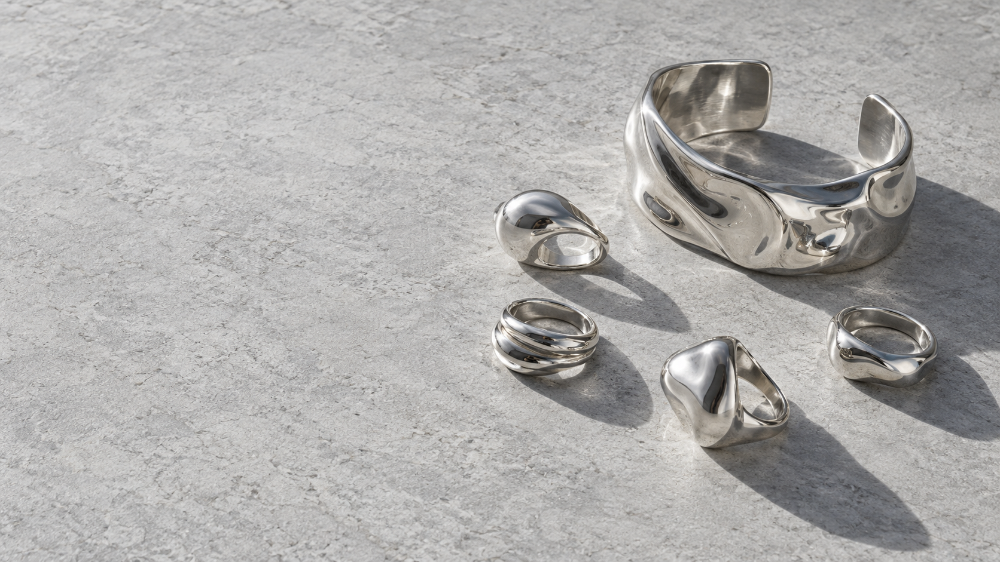

ELEDUCK / WORK SAMPLES / V2 / 02 OCT 2026
三个方向，三份升级成品。
参考同类产品的公开功能，完善业务流程与视觉。先体验，再选一份去谈第一单。


审批时可以这样试
会展：点“参会者预览”报名，再到名单批量签到。
门店：从摘要打开核查清单，登记跟进备注。
珠宝：收藏两款商品，点 Compare 并排比较。
当前交付边界
依据电鸭公开摘要制作，详情页受验证码限制。使用虚构业务数据和示例商品，不代表雇主已验收或仍在招人。会展记录和购物袋仅在当前浏览器保存；正式接单前需确认完整需求、真实数据和客户现有环境。